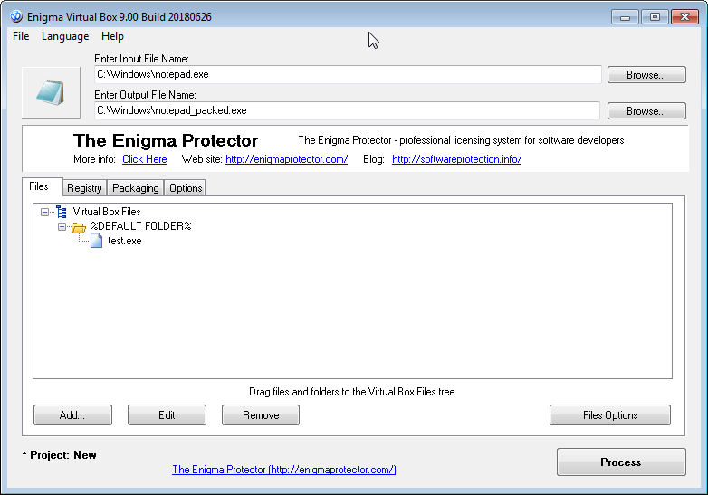

This is the initial step where the main project information should be entered. The core information is the file names of the main executable file of application (the one you are using to start application) and the packed one (the one that will be created after packing). If the application contains more than one executable file, then we recommend either pack each executable file separately, either pack only main executable and add other files to files tree for virtualization.

Input File - select the main executable file of your application that will be bundled with the files you wish to virtualize
Output File - the output file name. If you want the input file being overwritten with output, keep output field empty